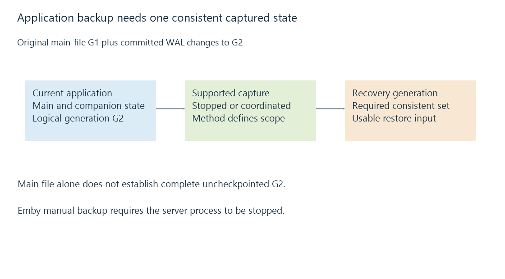

Application-data backups and consistent server state
Application-data backups preserve the server's configuration and user state through a supported method that captures a consistent data set.
Server application data includes configuration, catalog state, user information and other persistent records. It is separate from the films the server reads.
A media backup can preserve the movies while leaving you without server settings or playback history. Conversely, an application-data backup can preserve the server's organization while depending on media that lives elsewhere.
Identify the state you expect to recover
| State | Recovery question |
|---|---|
| Configuration and library definitions | Which paths and settings should return? |
| User-specific data | Which histories, favorites and preferences must remain? |
| Database records | Is the captured database state internally consistent? |
| Plugin data | Does the chosen method include this plugin's persistent state? |
| Cached or generated assets | Are they included, or will supported regeneration recreate them? |
| Source media | Is it protected through a separate media backup? |
A plugin's data directory or an external integration may have its own scope. The presence of one archive called “server backup” does not establish inclusion of every external location.
Copying a running database is not an ordinary file copy
A database can update several pages and companion files while a copy tool reads them. The resulting copy might combine observations from different points. In WAL mode, committed changes can also remain in a companion log rather than in the main database file.

An original state example makes the omission clear:
Main database: generation G1
WAL: committed changes from G1 to G2
Current logical database: G2
Copying only the main file: does not establish a complete G2 backup
A database-aware backup API can coordinate a consistent result. SQLite's online backup API is an example of that capability. It is not a promise that an arbitrary directory copy performs the same coordination.
The supported method defines consistency
Emby's manual-backup documentation requires that the server process is not running during the file backup. That makes the documented procedure different from copying live application files while playback, scanning or scheduled tasks continue.
The Backup & Restore plugin supplies another documented workflow and has Emby Premiere requirements. Its selected options and supported scope determine what it saves; do not infer that it copies every media file.
Use the documented data-folder discovery rather than assuming every platform stores application state at one universal path. Container mounts, service accounts and migration between systems can alter how that location is reached.
A backup records a versioned environment
Server and plugin versions can influence how persistent data are interpreted. A restore may require supported upgrade or migration steps. Credentials, access rules and paths can also refer to the original machine.
Record the environment needed to interpret the backup and verify its recovery through the supported workflow. Persistent storage ensures data survive an ordinary container replacement; a backup adds another recoverable copy and point in time.
See Also
- Media backups and recoverable generations
- Database write-ahead logging, readers and checkpoints
- Backup restoration: recovering a usable server